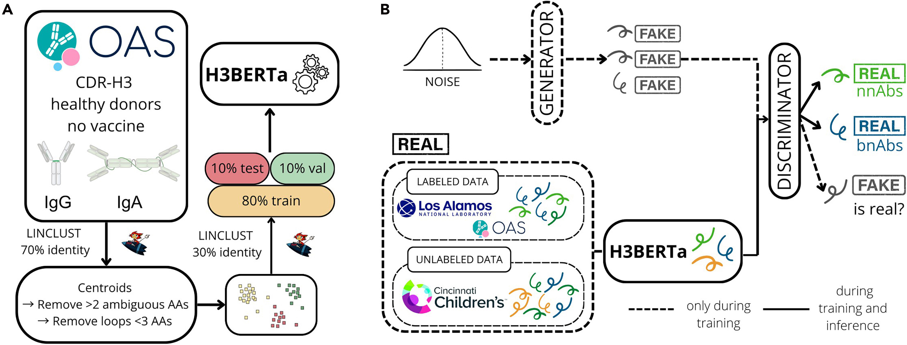
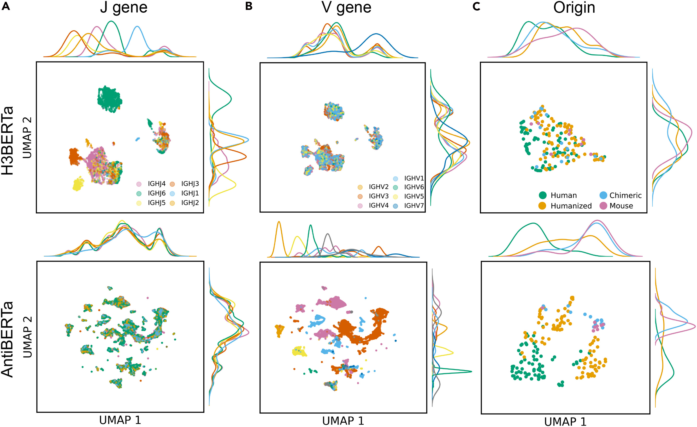
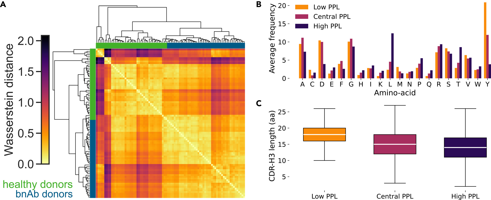
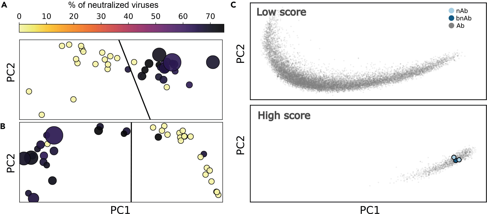

H3BERTa is a protein language model trained on one short loop: the antibody heavy-chain CDR-H3. We asked whether that single hypervariable fragment carries enough biological signal to make sense of entire immune repertoires — and found that it does, all the way down to telling healthy donors apart from people fighting HIV-1.
The question
What if one tiny loop could tell the story of an immune response?
Your body is constantly writing an enormous library of antibodies. Modern sequencing can read millions of antibody sequences from a single donor — but the overwhelming majority bind nothing useful, and the rare, valuable ones are buried in the noise. Among the rarest and most prized are broadly neutralizing antibodies (bnAbs): the antibodies that recognize conserved features across many viral strains, and that we'd love to find for pathogens like HIV-1.
Most machine-learning models read the entire variable region of an antibody. That sounds thorough, but it comes with a cost: the variable region is mostly conserved framework scaffolding, which dilutes the functional signal, demands a lot of labeled data, and burns computation learning patterns that aren't where the action is.
We took the opposite bet. What if we ignored almost everything, and looked only at the part of the antibody that actually does the improvising?
The model
A language model that reads only the CDR-H3
The heavy-chain Complementarity-Determining Region 3 (CDR-H3) is the most variable segment of an antibody — the loop that contributes most to antigen specificity and carries the fingerprints of immune selection, clonal expansion, and somatic mutation. It is, in a sense, the creative core of the antibody.
So we built H3BERTa, a transformer language model that reads only the CDR-H3 — the way an NLP model reads a sentence, but here the "sentence" is a string of amino acids:
- Architecture: a RoBERTa-style encoder (masked language model), ~86 million parameters.
- Training data: ~18 million CDR-H3 sequences from the Observed Antibody Space (OAS), curated to IgG and IgA isotypes from healthy, unvaccinated donors, and clustered to remove redundancy so the model learns biology, not duplicates.
- Tokenization: amino-acid level, up to 100 residues per loop.
- Training: 113 epochs on a single NVIDIA A100, converging to a masked-LM loss of 1.58. Its predicted substitutions scored a positive BLOSUM62 average (2.55), a sign it learns biochemically plausible amino acids rather than memorizing exact matches.

The evidence
Does a short loop really encode the biology? Three tests.
To find out whether CDR-H3 alone is "enough," we compared H3BERTa to AntiBERTa, a model trained on the full variable region — and probed what each had learned.
- Genomic structure. H3BERTa's embedding space organized antibodies primarily by J-gene usage — exactly the segment that shapes the C-terminal end of CDR-H3 — whereas AntiBERTa clustered by V-gene, reflecting its access to the framework. Each model "sees" the signal its input contains.
- Maturation state. Using a simple linear discriminant analysis, both models cleanly separated naive from memory B-cell sequences — meaning the CDR-H3 alone carries traces of B-cell maturation, not just germline identity.
- Repertoire typicality. With pseudo-perplexity (how "expected" a sequence looks to the model), H3BERTa gave each repertoire a statistical signature.

That last tool turned out to be the most interesting.
The signal
Telling healthy and HIV-1 repertoires apart — in the tails
We computed pseudo-perplexity across CDR-H3 repertoires from 42 healthy donors and 46 HIV-1 bnAb donors. At first glance the distributions looked almost identical. But comparing their shapes with Wasserstein (Earth Mover's) distances and hierarchical clustering revealed a systematic separation between the two groups — and the differences lived in the distributional tails, not the bulk (confirmed by KS and Mann–Whitney tests, all p < 0.001).
The tails were also biochemically interpretable: low-perplexity CDR-H3s tended to be longer and tyrosine-rich (features linked to affinity maturation), while high-perplexity loops were shorter and leucine-rich, with systematic shifts in net charge. H3BERTa, in other words, isn't just counting letters — it's picking up the biophysics of immune history.

The application
From repertoires to single antibodies: finding bnAbs
Repertoire-level signal is nice, but can the embeddings flag an individual broadly neutralizing antibody? We built a balanced, deliberately hard labeled set (bnAbs from the CATNAP HIV database; non-neutralizers padded with "hard negatives" — healthy-donor loops that look deceptively bnAb-like).
- A simple linear SVM on H3BERTa embeddings reached 93% accuracy (macro-F1 0.92) on the test set — strong evidence that the representations are linearly separable and biologically rich.
- For the messier reality of full repertoires, where bnAbs are vanishingly rare, we built GAN-H3BERTa: a semi-supervised GAN-BERT framework with H3BERTa as the backbone, learning from a few labels plus a large pool of unlabeled HIV repertoire sequences. It hit 85% test accuracy (MCC 0.71, AUC 0.85) with high sensitivity for bnAbs (recall 0.95), tightened the embedding space, and trimmed false positives on whole repertoires — while still correctly flagging the experimentally validated bnAbs.

Try it
Run H3BERTa on your own CDR-H3 sequences
H3BERTa is on the Hugging Face Hub as Chrode/H3BERTa. Provide CDR-H3 loops as plain amino-acid strings (no leading C / trailing W, no separators).
Extract per-sequence embeddings (for clustering, similarity search, or a downstream classifier):
embeddings.py
from transformers import pipeline
import torch, numpy as np
feat = pipeline(
task="feature-extraction",
model="Chrode/H3BERTa",
tokenizer="Chrode/H3BERTa",
device=0 if torch.cuda.is_available() else -1,
)
seqs = ["ARMGAAREWDFQY", "ARDGLGEVAPDYRYGIDV"]
with torch.no_grad():
outs = feat(seqs)
# Mean pooling across tokens -> per-sequence embedding
embs = [np.array(o).mean(axis=0) for o in outs]
print(len(embs), embs[0].shape)
Score mutations with masked-language modeling (pseudo-likelihood of a residue in context):
mutation_scoring.py
from transformers import pipeline, AutoTokenizer
model_id = "Chrode/H3BERTa"
tok = AutoTokenizer.from_pretrained(model_id)
mlm = pipeline(task="fill-mask", model=model_id, tokenizer=tok, device=0)
seq = "ARDRS[MASK]GGYFDY".replace("[MASK]", tok.mask_token)
for p in mlm(seq, top_k=10):
print(p["token_str"], round(p["score"], 4))
What's next
You don't always need the whole antibody to read the immune system
H3BERTa makes a simple but useful point: a focused model on the hypervariable CDR-H3 captures germline structure, maturation state, and subtle disease-associated signatures — and stays light enough to run in data-scarce settings, where full-length sequences or abundant labels simply aren't available.
Next steps include testing H3BERTa across broader datasets and disease contexts, pushing toward direct prediction of antigen specificity and neutralization breadth from sequence, and sharpening the GAN-BERT framework to pull rare, therapeutically relevant antibodies out of large repertoires — toward a compact, practical tool for antibody discovery, vaccine design, and longitudinal immune monitoring.